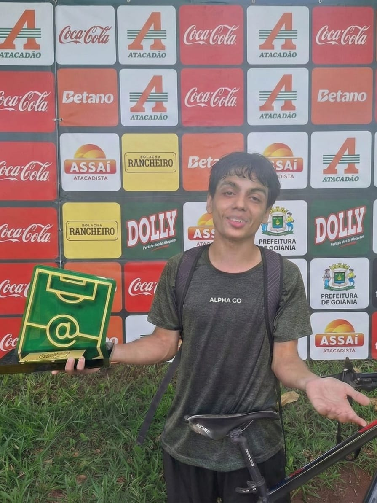
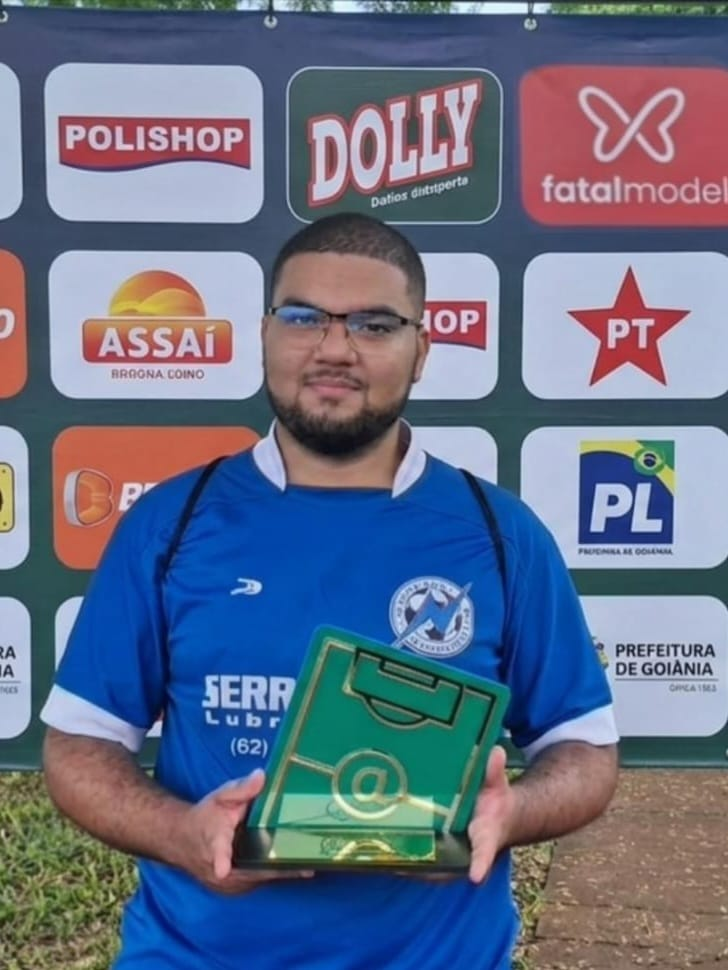
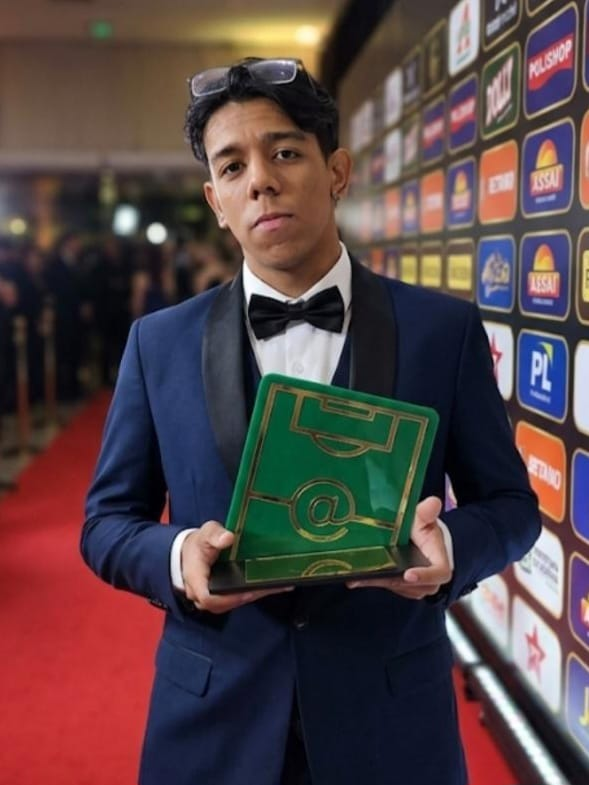

Introdução
[editar]O Society (informalmente chamado de Society™ ou simplesmente o fut) é um coletivo informal de futebol fundado em abril de 2025, composto predominantemente por estudantes do Instituto de Informática (INF) da Universidade Federal de Goiás (UFG), em Goiânia. O grupo reúne-se regularmente aos sábados pela manhã no Ginásio da Faculdade de Educação Física (FEF) e, ocasionalmente, no Campo Farofa, para partidas de futsal e society.
O que começou como uma iniciativa despretensiosa de organizar peladas entre colegas tornou-se, ao longo dos meses, uma tradição semanal com regras próprias, sistema de pontuação digital, premiação mensal e rivalidades amistosas. O grupo é notório tanto pelo nível crescente de competitividade técnica quanto pelo espírito descontraído e camaradagem entre seus membros.
História e Origens
[editar]Fundação
O Society™ foi idealizado e criado por Igor Pache e Lucas Dalla em abril de 2025, com o propósito inicial de facilitar a organização de partidas de futebol entre alunos da UFG, com foco nos estudantes do INF. Apesar de sua criação ter ocorrido no primeiro semestre de 2025, o grupo só começou a ganhar tração significativa ao largo do segundo semestre, quando a frequência das partidas aumentou consideravelmente.
O ponto de inflexão logístico foi a descoberta de que era possível reservar gratuitamente o Ginásio da FEF. A partir desse momento, as peladas passaram a ocorrer de forma praticamente ininterrupta toda semana, sempre aos sábados pela manhã, consolidando o costume que perdura até os dias atuais.
O Prêmio Craque do Mês
Uma das mudanças mais marcantes na cultura do grupo foi a decisão coletiva de começar a registrar os gols marcados em cada partida e premiar o destaque do jogo — o chamado Craque do Jogo. Esse prêmio foi criado pelo designer Matheus Marques, cuja contribuição visual ajudou a dar identidade ao grupo.
Inicialmente, o registro era feito de maneira rudimentar: apenas os nomes dos marcadores eram anotados. Com o tempo, a ideia amadureceu e os estudantes Rafael Batista e Enzo Marinho decidiram desenvolver um aplicativo dedicado para gerenciar essas estatísticas — projeto que se tornaria peça central da identidade do grupo.
O Aplicativo
O App do Fut, desenvolvido por Rafael Batista e Enzo Marinho, trouxe para o ambiente digital funcionalidades como sorteio de times, registro de gols, assistências, gols contra e cartões. O sucesso da ferramenta elevou ainda mais o nível de competitividade: a cada sábado, ao término das partidas, era publicada uma tabela de artilheiros online.
Ao final de cada mês, o jogador com mais gols e assistências era coroado Craque do Mês, recebendo um troféu físico e tendo sua foto estampada no grupo de mensagens durante todo o mês subsequente. Como bônus adicional, o campeão ganhava o direito — e a obrigação no sentido mais festivo — de pagar a coca para os parceiros no almoço do Restaurante Universitário.
Formato e Regras
As regras sofreram alterações ao longo do tempo. As vigentes atualmente são:
⚽ Composição das Equipes
- Em Futsal: 4 jogadores de linha por time.
- Em Society: 5 jogadores de linha por time.
- Os goleiros são os jogadores que estão aguardando fora do jogo na vez.
- Os times são sorteados aleatoriamente entre os 8 (futsal) ou 10 (society) primeiros a chegar.
- Os jogadores seguintes, em ordem de chegada, vão montando o time reserva das próximas partidas.
⏱️ Duração e Resultados
- Cada partida tem duração de 8 minutos.
- Se um time marcar 3 gols antes do tempo esgotado, é declarado vencedor e a partida encerra imediatamente.
- Se o mesmo time vencer 3 partidas consecutivas, ele é eliminado da sequência junto ao time perdedor, dando lugar ao time reserva.
- Partidas encerradas em empate resultam na saída dos dois times.
Jogadores Notáveis
Abaixo estão listados os jogadores de maior destaque na história do grupo, seja por conquistas, personalidade ou contribuições fora de campo.
Estatísticas e Recordes
data.json…
🥅 Artilheiros
| # | Jogador | Gols | Partidas | Média/Jogo |
|---|---|---|---|---|
| Carregando… | ||||
🎯 Garçons (Assistências)
| # | Jogador | Assist. | Partidas | Média/Jogo |
|---|---|---|---|---|
| Carregando… | ||||
⚡ Power Ranking (G+A)
| # | Jogador | Gols | Assist. | G+A | Partidas |
|---|---|---|---|---|---|
| Carregando… | |||||
🟨 Disciplina (Cartões)
| # | Jogador | Amarelos | Vermelhos | Total |
|---|---|---|---|---|
| Carregando… | ||||
😬 Friendly Fire — Gols Contra
| # | Jogador | Gols Contra |
|---|---|---|
| Carregando… | ||
⭐ Média de Avaliação (mín. 3 partidas)
| # | Jogador | Média | Partidas |
|---|---|---|---|
| Carregando… | |||
🏅 Taxa de Vitórias
| # | Jogador | Win % | Vitórias | Partidas |
|---|---|---|---|---|
| Carregando… | ||||
🦾 Iron Man — Frequência
| # | Jogador | Sessões | Partidas |
|---|---|---|---|
| Carregando… | |||
🤝 Duplas Mortais
| # | Assistente | Goleador | Gols em Parceria |
|---|---|---|---|
| Carregando… | |||
💥 Blowout Kings (≥3 gols de diferença)
| # | Jogador | Goleadas | Partidas |
|---|---|---|---|
| Carregando… | |||
🎯 Clutch Performers (gols após 6:00)
| # | Jogador | Gols Clutch |
|---|---|---|
| Carregando… | ||
📊 Horários de Pico dos Gols
| # | Intervalo | Gols |
|---|---|---|
| Carregando… | ||
Estatísticas Gerais dos Jogadores
Tabela completa com os totais acumulados de cada jogador ao longo de todas as sessões
registradas no data.json. Clique nos cabeçalhos para ordenar.
| # | Foto | Jogador | Partidas | Gols | Assists | G+A ▼ | Amarelos | Vermelhos |
|---|---|---|---|---|---|---|---|---|
| Carregando… | ||||||||
Hall dos Craques do Mês
A cada mês, o jogador com mais Contribuições para Gols (G+A) é coroado Craque do Mês. Em caso de empate em G+A, o critério de desempate é quem possui mais gols marcados.
Janeiro 2026

O Pioneiro. O primeiro jogador a ser coroado campeão do título de Craque do Mês, cravando seu nome na história do campeonato durante a era jurássica em que as assistências ainda não eram contabilizadas pelos organizadores.
📜 Dados do 2º e 3º lugar perdidos na história. Provavelmente ele ganhou roubado.
Fevereiro 2026

Protagonista de um embate épico. Paulo terminou o mês rigorosamente empatado em participações diretas com Basiado, mas levou o caneco pelo critério de desempate: mais gols marcados. Entrou para a história como o primeiro campeão da era moderna, onde gols e assistências passaram a ser contabilizados juntos.
- 🥈 Basiado — 21 Gols, 11 Assists (32 G+A) (empate em G+A, 2º por menos gols)
- 🥉 Igor — 18 Gols, 9 Assists (27 G+A)
Março 2026

Uma performance avassaladora e histórica. Atuando como um verdadeiro maestro no meio-campo, estabeleceu o recorde absoluto até o momento com o maior número de participações diretas (GA) já registrado em um único mês.
- 🥈 Kaique — 13 Gols, 14 Assists (27 G+A)
- 🥉 Basiado — 16 Gols, 9 Assists (25 G+A)
Abril 2026
O atual detentor do título de Craque do Mês. Com uma performance letal e consistente no ataque, Rian garantiu a taça e o direito de ter sua foto reinando absoluta no ícone do grupo de WhatsApp da panela.
- 🥈 Enzo — 21 Gols, 11 Assists (32 G+A)
- 🥉 Rafael El Craque — 13 Gols, 15 Assists (28 G+A)
📋 Tabela Resumo Mensal
| Ano | Mês | 🥇 1º Lugar (G+A) | 🥈 2º Lugar (G+A) | 🥉 3º Lugar (G+A) |
|---|---|---|---|---|
| 2026 | Janeiro | 🥇 Basiado (N/A) | — | — |
| 2026 | Fevereiro | 🥇 Paulo (32) | 🥈 Basiado (32) | 🥉 Igor (27) |
| 2026 | Março | 🥇 Rafael El Craque (40) | 🥈 Kaique (27) | 🥉 Basiado (25) |
| 2026 | Abril | 🥇 Rian (33) | 🥈 Enzo (32) | 🥉 Rafael El Craque (28) |
🏛️ Hall da Fama — Títulos Acumulados
| # | Jogador | Títulos 🏆 |
|---|---|---|
| 1 | Basiado | 1 |
| 2 | Paulo | 1 |
| 3 | Rafael El Craque | 1 |
| 4 | Rian | 1 |
Trivia & Lore
- 📌 [Placeholder] — Adicione aqui incidentes notáveis, momentos engraçados e controvérsias históricas do grupo.
- 📌 [Placeholder] — Registre aqui rivalidades clássicas, sequências de vitórias e marcas históricas.
- 📌 [Placeholder] — Documente regras que existiram e foram abolidas ao longo dos meses.